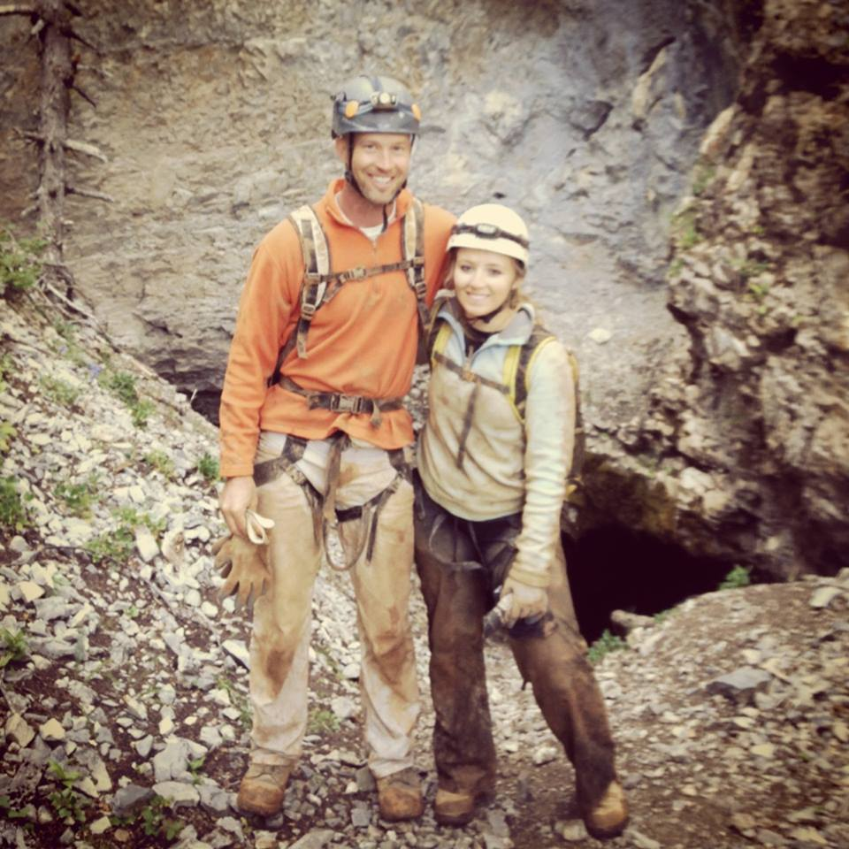
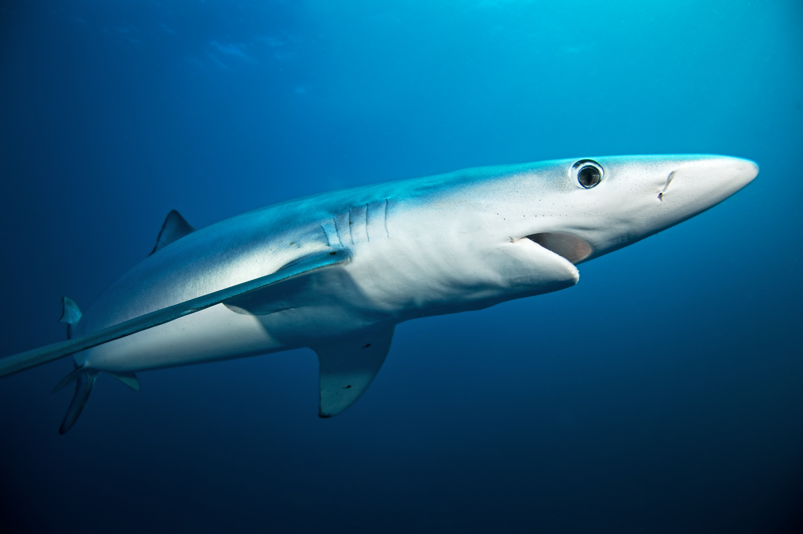
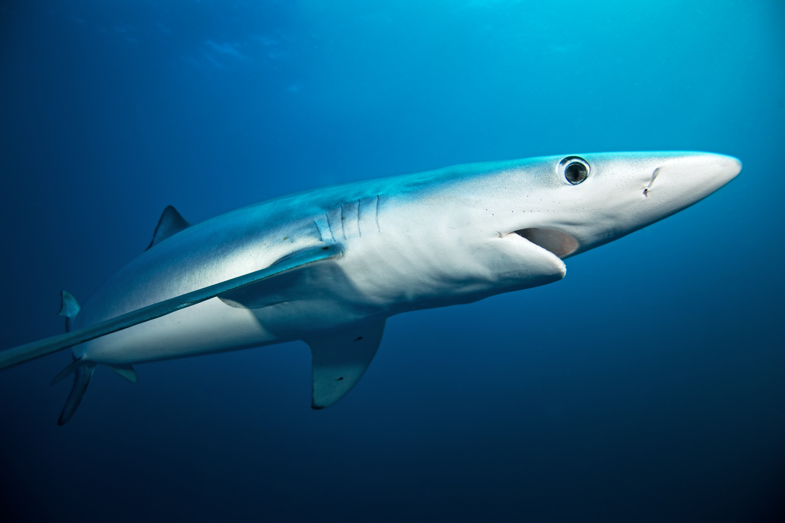
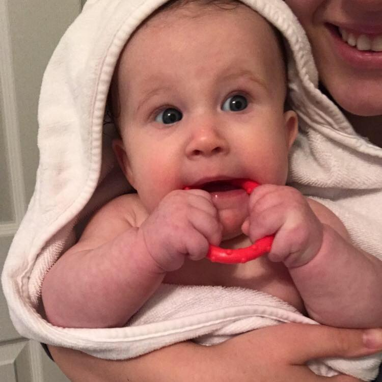
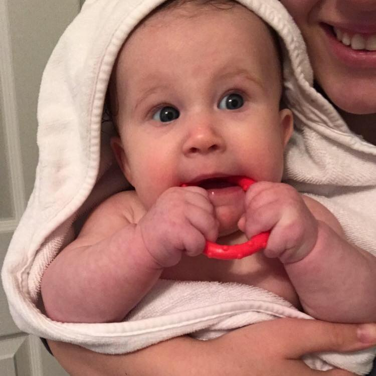

Nicollette Singleton
aNicollette Grace Singleton was born on March 3rd, 1995 in Blair, Nebraska. Her parents, Noelle
and Terry, raised her to be an adventurous, active, and curious child. She grew up mostly in

Omaha, Nebraska and Helena, Montana, where she throughout her childhood played soccer. She also
constantly went hiking, biking, mountain climbing, snowboarding, scuba diving, caving, and
anything else she could get her hands on that was new and different. Not only was she highly
 interested in everything outdoors, but she also loved school, and more specifically, animals
and biology. Her favorite study in biology was animals, especially sharks. Her favorite shark
is the Blue Shark, and to this day she can spout hundreds of facts and species of sharks that

nearly no one would know. After High School, she attended the University of Nebraska Kearney.
In the year 2017, Nicollette met her husband Justin. They got two little Yorkshire Terriers (her
favorite) and named them Milo and Teddy. Later that year they decided to get married, and quickly
interested in everything outdoors, but she also loved school, and more specifically, animals
and biology. Her favorite study in biology was animals, especially sharks. Her favorite shark
is the Blue Shark, and to this day she can spout hundreds of facts and species of sharks that

nearly no one would know. After High School, she attended the University of Nebraska Kearney.
In the year 2017, Nicollette met her husband Justin. They got two little Yorkshire Terriers (her
favorite) and named them Milo and Teddy. Later that year they decided to get married, and quickly
 after that they conceived. On July 25th, 2018 their daughter Elizabeth Grace Singleton was born.
Nowadays, Nicollette spends her time being the best mother and wife this world has ever seen,
and she continues to study all types of sciences. She plans to some day either work in the

medical field or in a Psychology based profession, and to move somewhere a little warmer than
Montana or Nebraska. If there was one word to describe Nicollette, it would be caring. She is
caring to every single animal, person, or thing, and that is why she is worthy of her story
being told.
after that they conceived. On July 25th, 2018 their daughter Elizabeth Grace Singleton was born.
Nowadays, Nicollette spends her time being the best mother and wife this world has ever seen,
and she continues to study all types of sciences. She plans to some day either work in the

medical field or in a Psychology based profession, and to move somewhere a little warmer than
Montana or Nebraska. If there was one word to describe Nicollette, it would be caring. She is
caring to every single animal, person, or thing, and that is why she is worthy of her story
being told.
Go to Top